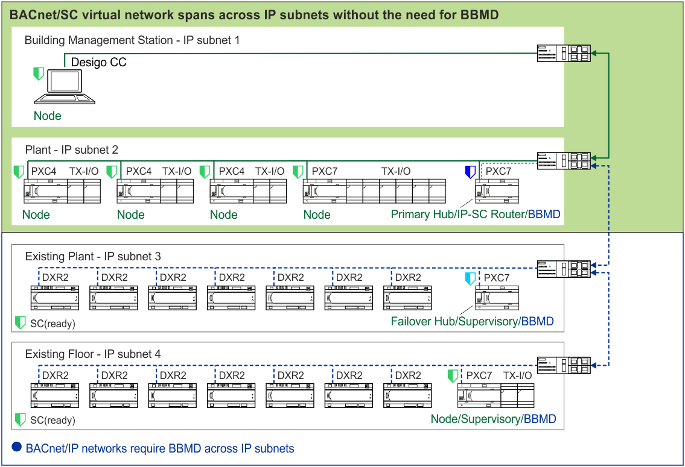

新建项目BACnet网络结构示例
在新的建设项目中，应尽可能使用 BACnet/SC-native 和 BACnet/SC-ready 设备，以便客户更轻松地过渡到更安全的 BACnet 网络。
由于 BACnet/SC 仅在 BACnet/SC 逻辑网络内安全，因此必须使用传统方法保护任何非 BACnet/SC 网络。 。
BACnet/SC 使 BBMDs 在 BACnet/SC 逻辑网络（集线器和节点）中过时。尽管 BACnet/SC 节点在跨越 IP 子网时不需要 BBMDs 来与集线器通信，但项目中不同 IP 子网上的任何现有 BACnet/IP 设备仍然需要 BBMDs 。
DXR2.E 是 BACnet/SC-ready 设备。一旦其固件升级为具有 BACnet/SC 功能，就可以删除 BBMD 配置，并且整个 BACnet 互联网将使用 BACnet/SC. 保持安全

在具有多个或多个 IP 子网的大型项目中设计混合 BACnet/SC 和 BACnet/IP 网络时，其中网络的 BACnet/IP 部分可能需要 BBMDs，必须确保仔细配置 BACnet 路由和 BBMDs' 广播分布表，以避免网络环路或同一设备的多个路径。
